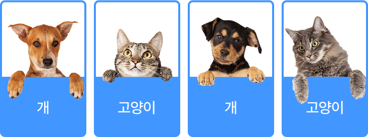

개념 학습
기계학습의 유형
지도학습
지도학습은 입력 데이터와 그에 맞는 레이블이 있어 입력값과 레이블(정답)을 함께 학습하는 방식이다. 이를 통해 새로운 데이터가 주어졌을 때 그에 대한 예측값을 출력할 수 있다. 지도학습은 질병 유무 판단, 스팸 메일 분류, 특정일의 날씨 예측 등에 활용할 수 있다.
지도학습: 분류 예시
개와 고양이의 이미지를 입력받아 해당 레이블과 함께 규칙을 학습한다.
학습을 완료하면 새로운 데이터가 입력됐을 때 예측하여 분류를 수행한다.
학습을 완료하면 새로운 데이터가 입력됐을 때 예측하여 분류를 수행한다.
-
 레이블이 있는 학습 데이터
-
학습 레이블(정답)
- 분류 모델
-
예측 새로운 데이터
-
결과